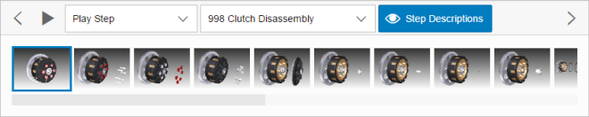
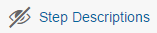
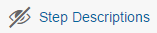
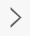
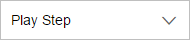
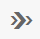

Step Navigation
The sap.ui.vk.StepNavigation control enables navigation and activation of procedures and steps contained in a single 3D scene.
- sap.ui.vk.StepNavigation in the API Reference in the Demo Kit
- Step 5 - Viewport with Scene Tree and Step Navigation in the Demo Kit
The VDS file format supports pre-authored animations, also known as steps. Steps are grouped into procedures.
The Step Navigation (sap.ui.vk.StepNavigation) control allows you to see which animations are available in a 3D scene. You can play an animation for an individual step, or play all the steps for a single procedure from start to finish.
Step Navigation User Interface
The Step Navigation control can be divided into two parts: the top part of the control contains buttons and drop down menus that allow you to choose a procedure, set the play mode, and play, pause, or skip a step. Below these buttons, thumbnails of each step are displayed. You can hover over a thumbnail to show the name of the step, and click on a thumbnail to play the step.
The following table describes the functionality of each of the buttons or dropdown menus in the Step Navigation control:
| Button / Menu name | Icon | Description |
|---|---|---|
| Previous |  |
Plays the previous step in the procedure. |
| Play |  |
Plays the currently selected step in the procedure. |
| Pause |  |
Pauses the animation at the current step. |
| Step Descriptions |    |
Shows or hides descriptions associated with the steps. By default, Step Descriptions are hidden. When step descriptions are shown, a dialog appears for the step that is being played. The dialog contains the step's name, and below it, any description associated with the step. |
| Next |  | Plays the next step in the procedure. |
| Play Options |  |
By default, there are three options:
|
| Procedures | (the dropdown menu located to the right of the Play Options dropdown menu) | Select which procedure in the scene to play. Depending on the loaded model, you may have one or more procedures to select from. |
Individual buttons and menus cannot be disabled.
In addition to using these buttons and drop down menus to select which step or steps to play, you can also click on the thumbnail for a step, and then click the Play button to play the animation associated with that step.
While a step is playing, you can still rotate, pan, or zoom in the scene.
Hiding or Displaying the Step Navigation Control
You can hide or view the Step Navigation control using the Step Navigation button in the toolbar (if sap.ui.vk.Toolbar is used in the application).
By default, Step Navigation is hidden from view. You can change this so that when a scene with animation is loaded into your application, then the Step Navigation control is displayed.
| Step Navigation button state | Description |
|---|---|
 |
Step Navigation is shown |
|  | Step Navigation is hidden |